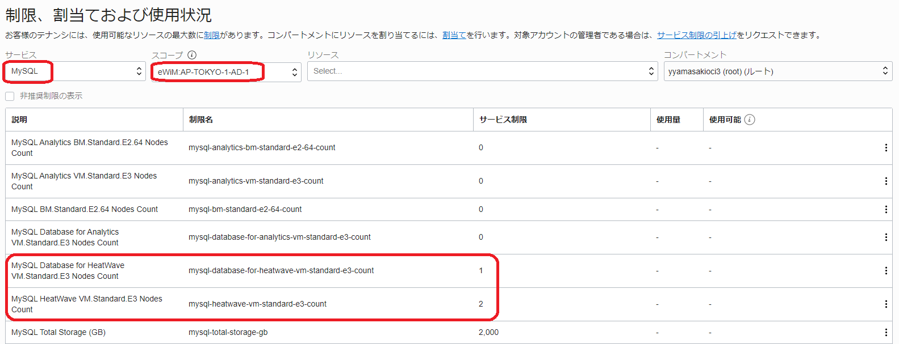
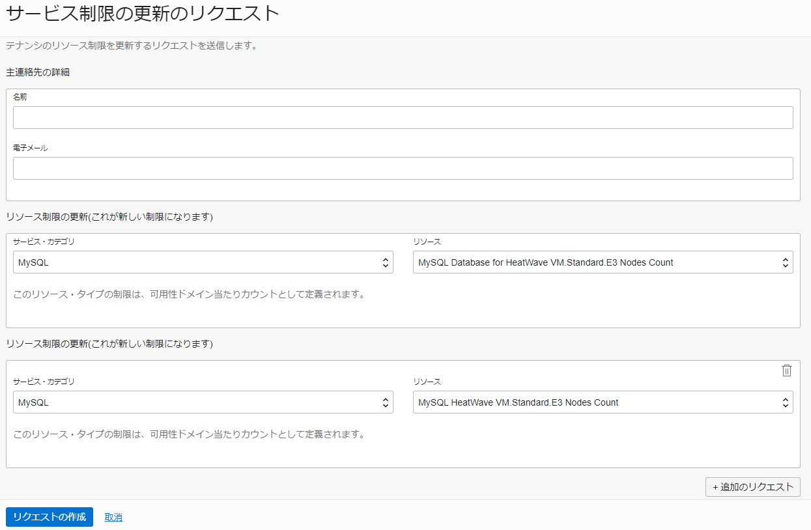
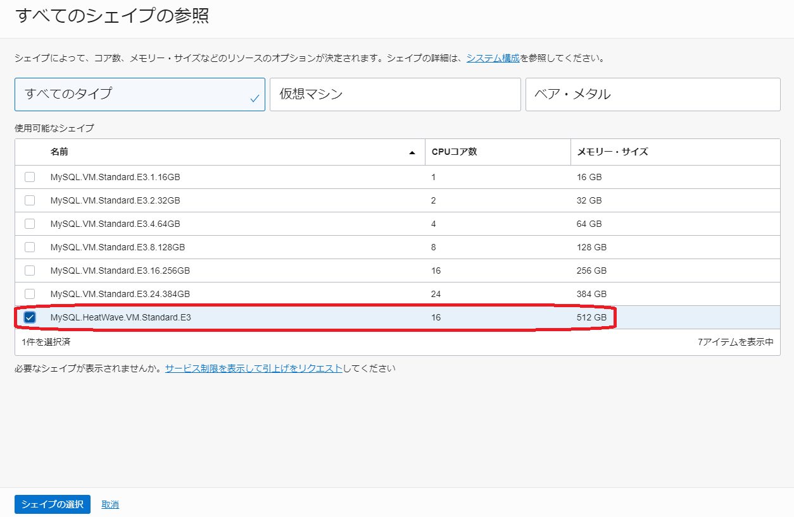
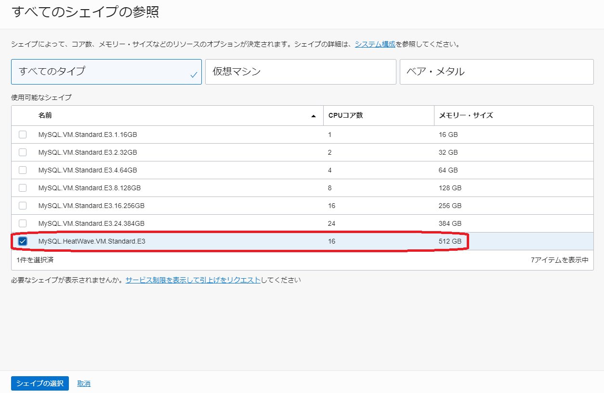
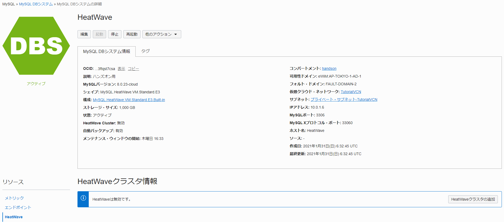
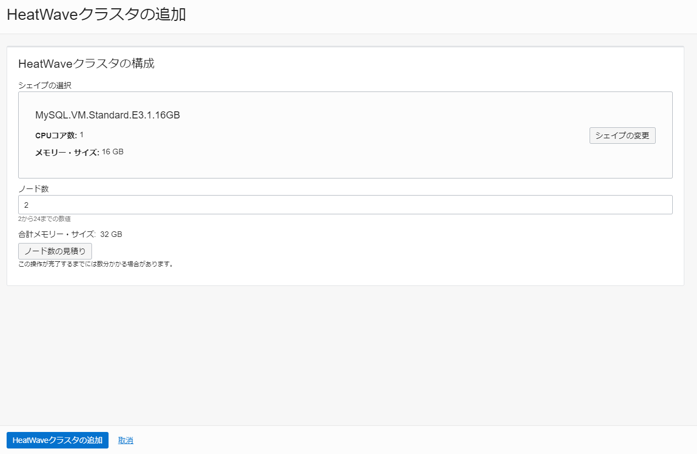
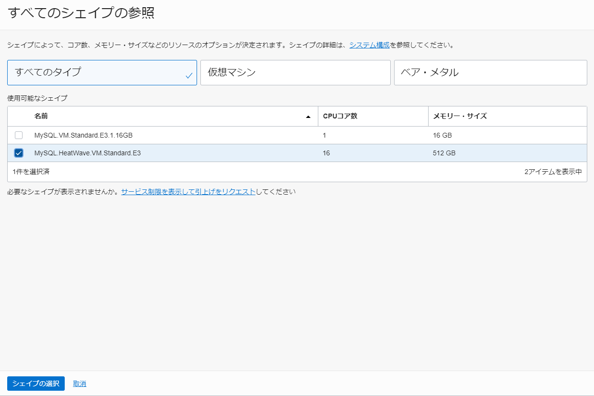
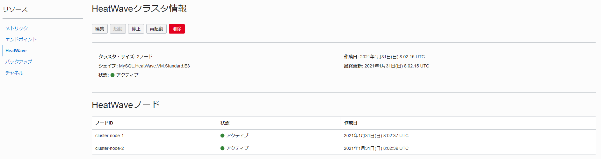
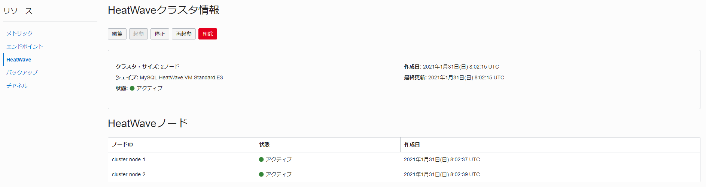

Oracle Cloud Infrastructure(OCI) では、HeatWaveというデータ分析処理を高速化できるMySQL Database Services(MDS)専用のクエリー・アクセラレーターが使用できます。HeatWaveもMDSと同じく、Always Freeの対象ではないため使用するためにはクレジットが必要ですが、トライアルアカウント作成時に付与されるクレジットでも使用可能です。
このチュートリアルでは、コンソール画面からHeatWaveを構成し、MySQLクライアントからサンプルデータベースを構成してHeatWaveを利用する手順を説明します。
所要時間 : 約40分 (約25分の待ち時間含む)
前提条件 :
- Oracle Cloud Infrastructure の環境(無料トライアルでも可) と、管理権限を持つユーザーアカウントがあること
- OCIコンソールにアクセスして基本を理解する - Oracle Cloud Infrastructureを使ってみよう(その1)を完了していること
- クラウドに仮想ネットワーク(VCN)を作る - Oracle Cloud Infrastructureを使ってみよう(その2)を完了していること
- インスタンスを作成する - Oracle Cloud Infrastructureを使ってみよう(その3)を完了していること
- クラウドでMySQL Databaseを使う(その9)を完了していること
注意 : チュートリアル内の画面ショットについては Oracle Cloud Infrastructure の現在のコンソール画面と異なっている場合があります
目次：
- 1. MySQL HeatWaveとは?
- 2. MySQL HeatWave構成時の注意事項
- 3. MySQL HeatWaveの構成(HeatWave用MDSの構成)
- 4. MySQL HeatWaveの構成(HeatWaveノードの追加)
- 5. サンプルデータベースの構築
- 6. HeatWaveへのデータロード
- 7. HeatWaveの確認
1. MySQL HeatWaveとは?
MySQL HeatWaveとはMySQL Database Serviceの拡張機能で、検索処理を高速化できるクエリーアクセラレーターです。HeatWaveノードはデータ分析/集計に向いたカラムナー(列指向)データベースとして実装されており、インメモリで超並列処理を実現し、分析系のSQLも高速に実行できます。MySQL 8.0ベースのサービスとなっていますので、今までMySQLで実行していたSQLをそのまま使えます。また、レプリケーションを構成してオンプレミス環境や他社クラウド環境にあるMySQL 5.7、8.0からETLを使わずにMySQL HeatWaveにデータを連携し、最新のデータを分析するリアルタイムデータ分析環境を構築することもできます。
2. MySQL HeatWave構成時の注意事項
MySQL HeatWaveを構成する前に、使用する環境のサービスリミットを確認し、後述する最小構成を満たしていることを確認して下さい。サービスリミットが最小構成を満たしてい無い場合は、事前にサービスリミットの引上げ申請を出して下さい1。
本チュートリアルで構成するMySQL HeatWaveの構成図は以下のようになります。HeatWaveを使用する時は、HeatWave専用のMySQL Database Serviceを構成し、そこにHeatWaveノードを追加します。HeatWaveノードはバックグラウンドで動作するため、アプリケーションからの接続先はMySQL Database Serviceになります。また、HeatWaveをデータ分析用途(OLAP)で使う場合の標準的なシェイプであるHeatWave.512GBの場合、HeatWaveノードの最小台数は1台、最大台数は64台となっています。HeatWaveノードではインメモリでデータを保持し、1台あたり約1,000GBのデータを保持できます。
(データによってデータの圧縮率も変わってくるため、実際に保持できるデータ量はそれぞれのデータに依存します)

サービスリミットの確認＆引上げリクエスト送信方法
-
コンソール左上のメニューをクリックしてメニューを表示し、一番下までスクロールします。ガバナンス → 制限、割当ておよび使用状況 をクリックします。

-
サービスは MySQL 、スコープは XXXX:AP-TOKYO-1-AD-1 を選択します(東京リージョンを使用している場合)。”XXXX”部分は固有の文字列になります。表示された画面で MySQL Database for HeatWave VM.Standard.E3 Nodes Count が1以上、 MySQL HeatWave VM.Standard.E3 Nodes Count が2以上になっていることを確認します。
 -
サービスリミットが最小構成を満たしていない場合は、右上の サービス制限の引上げ リンクをクリックし、必要事項を記入して リクエストの送信 ボタンをクリックすることでサービス制限の引上げリクエストを登録できます。作業完了の連絡は連絡先に入力したメールアドレスにメールで通知されます。

3. MySQL HeatWaveの構成(HeatWave用MDSの構成)
HeatWaveを構成する時は、HeatWave専用のMySQL Database Service(MDS)を構成し、そこにHeatWaveのノードを追加します。そのため、まずはHeatWave専用のシェイプを選択してMDSを構成します。
- コンソールメニューから データベース → MySQL → DBシステム を選択します。

- MySQL DBシステムの作成 ボタンを押します。この際、左下の リスト範囲 でリソースを作成したいコンパートメントを選択していることを確認してください。ここでは「handson」コンパートメントを使用しています。

-
立ち上がった MySQL DBシステムの作成 ウィンドウの ① DBシステム情報 のステップで、以下の項目を入力します。また、 シェイプの変更 をクリックして表示されたウインドウから MySQL.HeatWave.VM.Standard.E3 を選択し、シェイプの選択 をクリックします。その後元のウインドウに戻って 次 ボタンを押します。
- 名前 - 任意の名前を入力します。ここでは「HeatWave」と入力しています。
- 説明 - このMDSの説明を入力します。ここでは「ハンズオン用」と入力しています。(入力は任意です)
- データ・ストレージ・サイズ(GB) - データ用のストレージサイズを入力します。ここでは1000GB確保するために「1000」と入力しています。
 

-
② データベース情報 のステップで、以下の項目を入力し 次 ボタンを押します
- ユーザー名 - MySQL Databaseの管理者ユーザーのユーザー名を指定します。ここでは「root」と入力しています。(セキュリティの観点からは任意のユーザー名を指定することを推奨します)
- パスワード - MySQL Databaseの管理者ユーザーのパスワードを指定します。パスワードは8文字から32文字までの長さで、大文字、小文字、数字および特殊文字をそれぞれ1つ以上含める必要があります。
- パスワードの確認 - パスワードを再入力します。
- ホスト名 - 任意のホスト名を入力します。ここでは「HeatWave」と入力しています。

- ③ バックアップ情報 のステップで、何も変更せずに 作成 ボタンを押します。

- MDSが作成中になるのでしばらく待ちます。概ね15分程度で作成が完了しステータスがアクティブに変わります。


- ページ左下の リソース → エンドポイント をクリックして、ホスト名、IPアドレスを確認しておきます。

4. MySQL HeatWaveの構成(HeatWaveノードの追加)
- HeatWave用のMDSにHeatWaveノードを追加します。HeatWave用のMDSを選択した状態で左下のメニューより HeatWave をクックします。その後、HeatWaveクラスタの追加 をボタンを押します。

-
シェイプの変更 ボタンを押します。表示されたウインドウでHeatWave用のシェイプであるMySQL.HeatWave.VM.Standard.E3 を選択し、シェイプの選択 ボタンを押します。元のウインドに戻ってシェイプが変更されていることを確認し、HeatWaveクラスタの追加 ボタンをクリックします。 (既にMDSにデータをロードしている状態であればここで ノード数の見積もり ボタンを押すことで必要なHeatWaveノード数を見積もることもできます。今回はノード数は2にして次に進みます)



- HeatWaveノードが作成中になるのでしばらく待ちます。概ね10分程度でHeatWaveノードが追加されます。
 

5. サンプルデータベースの構築
MDSにサンプルデータベースを構築し、HeatWaveノードへデータをロードします。サンプルデータベースは事前に準備してあるTPC-H用のデータを使って構築します。 (TPC-H用のデータをMySQLにロードできるダンプファイルの形式で用意しているので、そのデータをロードしてサンプルデータベースを構築します。TPC-Hは小売業の売り上げを模した汎用的なデータ分析系のベンチマークで、22本のデータ分析/集計系のSQLが用意されています)
-
インスタンスを作成する - Oracle Cloud Infrastructureを使ってみよう(その3)で作成したコンピュート・インスタンスに接続し、以下のコマンドを実行してハンズオン用のファイルをダウンロードし、解凍します。解凍後に存在するtpch_dumpフォルダの中に、MySQLにロードできるダンプファイルの形式でTPC-H用データが格納されています。
実行コマンド(コピー＆ペースト用)
cd /home/opc wget https://objectstorage.ap-osaka-1.oraclecloud.com/p/seAq8Kgd4TyUqlv5M5qObMJwvsluhCPyOuHOn1L_t4HQYUle2DV-KdFeK44MS7yQ/n/idazzjlcjqzj/b/workshop/o/heatwave_workshop.zip unzip heatwave_workshop.zip ll実行例
$ cd /home/opc $ wget https://objectstorage.ap-osaka-1.oraclecloud.com/p/seAq8Kgd4TyUqlv5M5qObMJwvsluhCPyOuHOn1L_t4HQYUle2DV-KdFeK44MS7yQ/n/idazzjlcjqzj/b/workshop/o/heatwave_workshop.zip e_workshop.zip ll--2023-05-19 05:08:55-- https://objectstorage.ap-osaka-1.oraclecloud.com/p/seAq8Kgd4TyUqlv5M5qObMJwvsluhCPyOuHOn1L_t4HQYUle2DV-KdFeK44MS7yQ/n/idazzjlcjqzj/b/workshop/o/heatwave_workshop.zip <略> heatwave_workshop.zip 100%[=========================>] 332.24M 39.3MB/s in 6.9s 2023-05-19 05:09:02 (48.1 MB/s) - 'heatwave_workshop.zip' saved [348382849/348382849] $ unzip heatwave_workshop.zip Archive: heatwave_workshop.zip creating: tpch_dump/ inflating: tpch_dump/@.json <略> $ ll total 340244 -rw-rw-r--. 1 opc opc 348382849 Oct 23 2021 heatwave_workshop.zip drwxr-x---. 2 opc opc 8192 Mar 24 2021 tpch_dump -rw-rw-r--. 1 opc opc 3299 Mar 25 2021 tpch_offload.sql -rw-rw-r--. 1 opc opc 3497 Jun 11 2021 tpch_queries_mysql.sql -rw-rw-r--. 1 opc opc 3496 Jun 11 2021 tpch_queries_rapid.sql -
MySQL Shellを使ってMDSに接続し、MySQL Shellのロードダンプユーティリティを使用してMDSにTHP-H用のデータをロードします。実際にデータをロードする前に、予行演習オプション(dryRun: true)を指定してエラーが出ないことを確認してから、(dryRun: false)に変えてデータをロードします。
実行コマンド例(コピー＆ペースト用)：MDSへの接続
※パスワード、ホストの(MDSの)IPアドレスは環境に合わせて要修正mysqlsh --user=root --password=Oracle.123 --host=<mysql_private_ip_address> --port=3306 --js実行コマンド例(コピー＆ペースト用)：データロードの予行演習
util.loadDump("/home/opc/tpch_dump", {dryRun: true, resetProgress:true, ignoreVersion:true})実行コマンド例(コピー＆ペースト用)：データロード
util.loadDump("/home/opc/tpch_dump", {dryRun: false, resetProgress:true, ignoreVersion:true}) \quit実行例
$ mysqlsh --user=root --password=Oracle.123 --host=HeatWave.sub05190127511.tutorialvcn.oraclevcn.com --port=3306 --js MySQL Shell 8.0.33 <略> JS > util.loadDump("/home/opc/tpch_dump", {dryRun: true, resetProgress:true, ignoreVersion:true}) Loading DDL and Data from '/home/opc/tpch_dump' using 4 threads. Opening dump... NOTE: Dump format has version 1.0.2 and was created by an older version of MySQL Shell. If you experience problems loading it, please recreate the dump using the current version of MySQL Shell and try again. dryRun enabled, no changes will be made. Target is MySQL 8.0.33-u2-cloud (MySQL Database Service). Dump was produced from MySQL 8.0.23-u2-cloud WARNING: Destination is a MySQL Database Service instance but the dump was produced without the compatibility option. The 'ignoreVersion' option is enabled, so loading anyway. If this operation fails, create the dump once again with the 'ocimds' option enabled. Scanning metadata - done Checking for pre-existing objects... Executing common preamble SQL Executing DDL - done Executing view DDL - done Starting data load Executing common postamble SQL 0% (0 bytes / 1.11 GB), 0.00 B/s, 8 / 8 tables done Recreating indexes - done No data loaded. 0 warnings were reported during the load. JS > util.loadDump("/home/opc/tpch_dump", {dryRun: false, resetProgress:true, ignoreVersion:true}) Loading DDL and Data from '/home/opc/tpch_dump' using 4 threads. Opening dump... NOTE: Dump format has version 1.0.2 and was created by an older version of MySQL Shell. If you experience problems loading it, please recreate the dump using the current version of MySQL Shell and try again. Target is MySQL 8.0.33-u2-cloud (MySQL Database Service). Dump was produced from MySQL 8.0.23-u2-cloud WARNING: Destination is a MySQL Database Service instance but the dump was produced without the compatibility option. The 'ignoreVersion' option is enabled, so loading anyway. If this operation fails, create the dump once again with the 'ocimds' option enabled. Scanning metadata - done Checking for pre-existing objects... Executing common preamble SQL Executing DDL - done Executing view DDL - done Starting data load 2 thds loading / 100% (1.11 GB / 1.11 GB), 58.24 MB/s, 8 / 8 tables done Recreating indexes - done Executing common postamble SQL 50 chunks (8.66M rows, 1.11 GB) for 8 tables in 1 schemas were loaded in 17 sec (avg throughput 66.24 MB/s) 0 warnings were reported during the load. JS > \quit Bye! -
mysqlコマンドラインクライアントでMDSに接続し、tpchデータベース内にテーブルが作成されていることを確認します。
実行コマンド例(コピー＆ペースト用)
mysql -u root -p --host=HeatWave.sub05190127511.tutorialvcn.oraclevcn.com実行コマンド例(コピー＆ペースト用)
SHOW DATABASES; USE tpch; SHOW TABLES;実行例
$ mysql -u root -p --host=HeatWave.sub05190127511.tutorialvcn.oraclevcn.com Enter password: Welcome to the MySQL monitor. Commands end with ; or \g. <略> mysql> SHOW DATABASES; +--------------------+ | Database | +--------------------+ | information_schema | | mysql | | performance_schema | | sys | | tpch | +--------------------+ 5 rows in set (0.00 sec) mysql> USE tpch; Reading table information for completion of table and column names You can turn off this feature to get a quicker startup with -A Database changed mysql> SHOW TABLES; +----------------+ | Tables_in_tpch | +----------------+ | customer | | lineitem | | nation | | orders | | part | | partsupp | | region | | supplier | +----------------+ 8 rows in set (0.00 sec) -
以下のSQLを実行してMDSでの実行時間を確認しておきます。このSQLはTPC-Hベンチマークの1つ目のSQLです。この例では、8.49秒かかりました。
実行コマンド(コピー＆ペースト用)
SELECT l_returnflag, l_linestatus, SUM(l_quantity) AS sum_qty, SUM(l_extendedprice) AS sum_base_price, SUM(l_extendedprice * (1 - l_discount)) AS sum_disc_price, SUM(l_extendedprice * (1 - l_discount) * (1 + l_tax)) AS sum_charge, AVG(l_quantity) AS avg_qty, AVG(l_extendedprice) AS avg_price, AVG(l_discount) AS avg_disc, COUNT(*) AS count_order FROM lineitem WHERE l_shipdate <= DATE '1998-12-01' - INTERVAL '90' DAY GROUP BY l_returnflag , l_linestatus ORDER BY l_returnflag , l_linestatus;実行例
mysql> SELECT -> l_returnflag, -> l_linestatus, -> SUM(l_quantity) AS sum_qty, -> SUM(l_extendedprice) AS sum_base_price, -> SUM(l_extendedprice * (1 - l_discount)) AS sum_disc_price, -> SUM(l_extendedprice * (1 - l_discount) * (1 + l_tax)) AS sum_charge, -> AVG(l_quantity) AS avg_qty, -> AVG(l_extendedprice) AS avg_price, -> AVG(l_discount) AS avg_disc, -> COUNT(*) AS count_order -> FROM -> lineitem -> WHERE -> l_shipdate <= DATE '1998-12-01' - INTERVAL '90' DAY -> GROUP BY l_returnflag , l_linestatus -> ORDER BY l_returnflag , l_linestatus; +--------------+--------------+-------------+-----------------+-------------------+---------------------+-----------+--------------+----------+-------------+ | l_returnflag | l_linestatus | sum_qty | sum_base_price | sum_disc_price | sum_charge | avg_qty | avg_price | avg_disc | count_order | +--------------+--------------+-------------+-----------------+-------------------+---------------------+-----------+--------------+----------+-------------+ | A | F | 37734107.00 | 56586554400.73 | 53758257134.8700 | 55909065222.827692 | 25.522006 | 38273.129735 | 0.049985 | 1478493 | | N | F | 991417.00 | 1487504710.38 | 1413082168.0541 | 1469649223.194375 | 25.516472 | 38284.467761 | 0.050093 | 38854 | | N | O | 74476040.00 | 111701729697.74 | 106118230307.6056 | 110367043872.497010 | 25.502227 | 38249.117989 | 0.049997 | 2920374 | | R | F | 37719753.00 | 56568041380.90 | 53741292684.6040 | 55889619119.831932 | 25.505794 | 38250.854626 | 0.050009 | 1478870 | +--------------+--------------+-------------+-----------------+-------------------+---------------------+-----------+--------------+----------+-------------+ 4 rows in set (8.49 sec)
6. HeatWaveへのデータロード
HeatWaveを使用する時には、事前に対象テーブルのデータをMDSからHeatWaveにロードする必要があります。HeatWaveにデータをロードした後は、MDSでデータを変更すると自動的に変更が伝搬されるため、この作業は新しくテーブルを作成した時や初回のデータロード時にのみ行う必要があります。
(HeatWaveノードを再起動した時は、バックグラウンド処理でオブジェクトストレージ上に保存しているHeatWaveフォーマットのデータを自動的にロードするため、手動での再ロードは不要です。また、MDSからHeatWaveにロードするよりも高速にデータをロードできます)
-
ALTER TABLE文を使い、tpchデータベース内のテーブルに対してSECONDARY_ENGINE=RAPID を定義します2。
実行コマンド(コピー＆ペースト用)
ALTER TABLE tpch.customer SECONDARY_ENGINE=RAPID; ALTER TABLE tpch.lineitem SECONDARY_ENGINE=RAPID; ALTER TABLE tpch.nation SECONDARY_ENGINE=RAPID; ALTER TABLE tpch.orders SECONDARY_ENGINE=RAPID; ALTER TABLE tpch.part SECONDARY_ENGINE=RAPID; ALTER TABLE tpch.partsupp SECONDARY_ENGINE=RAPID; ALTER TABLE tpch.region SECONDARY_ENGINE=RAPID; ALTER TABLE tpch.supplier SECONDARY_ENGINE=RAPID;実行例
mysql> ALTER TABLE tpch.customer SECONDARY_ENGINE=RAPID; ALTER TABLE tpch.nation SECONDARY_ENGINE=RAPID;Query OK, 0 rows affected (0.00 sec) Records: 0 Duplicates: 0 Warnings: 0 mysql> ALTER TABLE tpch.lineitem SECONDARY_ENGINE=RAPID; ALTER TABLE tpch.orders SECONDARY_ENGINE=RAPID; Query OK, 0 rows affected (0.01 sec) Records: 0 Duplicates: 0 Warnings: 0 <略> -
ALTER TABLE テーブル名 SECONDARY_LOAD; を実行し、データをHeatWaveノードにロードします。
実行コマンド(コピー＆ペースト用)
ALTER TABLE tpch.customer SECONDARY_LOAD; ALTER TABLE tpch.lineitem SECONDARY_LOAD; ALTER TABLE tpch.nation SECONDARY_LOAD; ALTER TABLE tpch.orders SECONDARY_LOAD; ALTER TABLE tpch.part SECONDARY_LOAD; ALTER TABLE tpch.partsupp SECONDARY_LOAD; ALTER TABLE tpch.region SECONDARY_LOAD; ALTER TABLE tpch.supplier SECONDARY_LOAD;実行例
mysql> ALTER TABLE tpch.customer SECONDARY_LOAD; Query OK, 0 rows affected (1.25 sec) mysql> ALTER TABLE tpch.lineitem SECONDARY_LOAD; Query OK, 0 rows affected (22.46 sec) <略>なお、本ハンズオンでは内部の動きを理解するために上記の手順を実行していますが、Auto Parallel Loadユーティリティを使用して、より簡単な操作でより高速にデータをHeatWaveノードにロードすることもできます。その場合は、以下のコマンドを実行します。
実行コマンド(コピー＆ペースト用)
CALL sys.heatwave_load(JSON_ARRAY("tpch"),NULL);
7. HeatWaveの確認
先ほど実行したSQLを再度実行して、HeatWaveでの実行時間を確認します。この例では、0.13秒で実行出来ていますので、約65倍高速化されています。この例で検索している対象のデータ量は約900MBとそれほど大きくありませんが、この程度のデータ量でも顕著に性能が向上しています。
実行コマンド(コピー＆ペースト用)
SELECT
l_returnflag,
l_linestatus,
SUM(l_quantity) AS sum_qty,
SUM(l_extendedprice) AS sum_base_price,
SUM(l_extendedprice * (1 - l_discount)) AS sum_disc_price,
SUM(l_extendedprice * (1 - l_discount) * (1 + l_tax)) AS sum_charge,
AVG(l_quantity) AS avg_qty,
AVG(l_extendedprice) AS avg_price,
AVG(l_discount) AS avg_disc,
COUNT(*) AS count_order
FROM
lineitem
WHERE
l_shipdate <= DATE '1998-12-01' - INTERVAL '90' DAY
GROUP BY l_returnflag , l_linestatus
ORDER BY l_returnflag , l_linestatus;
実行例
mysql> SELECT
-> l_returnflag,
-> l_linestatus,
-> SUM(l_quantity) AS sum_qty,
-> SUM(l_extendedprice) AS sum_base_price,
-> SUM(l_extendedprice * (1 - l_discount)) AS sum_disc_price,
-> SUM(l_extendedprice * (1 - l_discount) * (1 + l_tax)) AS sum_charge,
-> AVG(l_quantity) AS avg_qty,
-> AVG(l_extendedprice) AS avg_price,
-> AVG(l_discount) AS avg_disc,
-> COUNT(*) AS count_order
-> FROM
-> lineitem
-> WHERE
-> l_shipdate <= DATE '1998-12-01' - INTERVAL '90' DAY
-> GROUP BY l_returnflag , l_linestatus
-> ORDER BY l_returnflag , l_linestatus;
+--------------+--------------+-------------+-----------------+-------------------+---------------------+-----------+--------------+----------+-------------+
| l_returnflag | l_linestatus | sum_qty | sum_base_price | sum_disc_price | sum_charge | avg_qty | avg_price | avg_disc | count_order |
+--------------+--------------+-------------+-----------------+-------------------+---------------------+-----------+--------------+----------+-------------+
| A | F | 37734107.00 | 56586554400.73 | 53758257134.8700 | 55909065222.827692 | 25.522005 | 38273.129734 | 0.049985 | 1478493 |
| N | F | 991417.00 | 1487504710.38 | 1413082168.0541 | 1469649223.194375 | 25.516471 | 38284.467760 | 0.050093 | 38854 |
| N | O | 74476040.00 | 111701729697.74 | 106118230307.6056 | 110367043872.497010 | 25.502226 | 38249.117988 | 0.049996 | 2920374 |
| R | F | 37719753.00 | 56568041380.90 | 53741292684.6040 | 55889619119.831932 | 25.505793 | 38250.854626 | 0.050009 | 1478870 |
+--------------+--------------+-------------+-----------------+-------------------+---------------------+-----------+--------------+----------+-------------+
4 rows in set (0.13 sec)
なお、HeatWaveが使われるSQLかどうかは、EXPLAINで実行計画を取ることで確認出来ます。HeatWaveを使用する場合は Extra列 に Using secondary engine RAPID と表示されます。
実行コマンド(コピー＆ペースト用)
EXPLAIN SELECT
l_returnflag,
l_linestatus,
SUM(l_quantity) AS sum_qty,
SUM(l_extendedprice) AS sum_base_price,
SUM(l_extendedprice * (1 - l_discount)) AS sum_disc_price,
SUM(l_extendedprice * (1 - l_discount) * (1 + l_tax)) AS sum_charge,
AVG(l_quantity) AS avg_qty,
AVG(l_extendedprice) AS avg_price,
AVG(l_discount) AS avg_disc,
COUNT(*) AS count_order
FROM
lineitem
WHERE
l_shipdate <= DATE '1998-12-01' - INTERVAL '90' DAY
GROUP BY l_returnflag , l_linestatus
ORDER BY l_returnflag , l_linestatus;
実行例
mysql> EXPLAIN SELECT
-> l_returnflag,
-> l_linestatus,
-> SUM(l_quantity) AS sum_qty,
-> SUM(l_extendedprice) AS sum_base_price,
-> SUM(l_extendedprice * (1 - l_discount)) AS sum_disc_price,
-> SUM(l_extendedprice * (1 - l_discount) * (1 + l_tax)) AS sum_charge,
-> AVG(l_quantity) AS avg_qty,
-> AVG(l_extendedprice) AS avg_price,
-> AVG(l_discount) AS avg_disc,
-> COUNT(*) AS count_order
-> FROM
-> lineitem
-> WHERE
-> l_shipdate <= DATE '1998-12-01' - INTERVAL '90' DAY
-> GROUP BY l_returnflag , l_linestatus
-> ORDER BY l_returnflag , l_linestatus;
+----+-------------+-------+------------+------+---------------+------+---------+------+------+----------+-------------------------------------------------------------------------+
| id | select_type | table | partitions | type | possible_keys | key | key_len | ref | rows | filtered | Extra |
+----+-------------+-------+------------+------+---------------+------+---------+------+------+----------+-------------------------------------------------------------------------+
| 1 | NONE | NULL | NULL | NULL | NULL | NULL | NULL | NULL | NULL | NULL | Using secondary engine RAPID. Use EXPLAIN FORMAT=TREE to show the plan. |
+----+-------------+-------+------------+------+---------------+------+---------+------+------+----------+-------------------------------------------------------------------------+
1 row in set, 1 warning (0.01 sec)
また、オプティマイザヒントを使うことで、HeatWaveを使うかどうかを明示的に指定することもできます。ヒント句は以下の3種類あります。
- SET_VAR(use_secondary_engine=ON) : HeatWaveを使う。HeatWaveが使えない場合(HeatWaveノードの停止時、HeatWaveにデータをロードしていない場合など)や、オプティマイザがHeatWaveを使わない方が効率的と判断した場合はMDSで処理する。
- SET_VAR(use_secondary_engine=OFF) : HeatWaveを使わない。
- SET_VAR(use_secondary_engine=FORCED) : 強制的にHeatWaveを使う。HeatWaveが使えない場合はSQLがエラーになる。
ヒント句は以下のように、SELECT 句の後にSQL文のコメントとして埋め込んで使用します。SQL文の文法的にはコメントになっているため、スペルミスをするなどでヒント句の指定を間違ってもSQLとしてはエラーにならないので注意して下さい。(“Unresolved name ‘XXXXX’ for SET_VAR hint” という警告は発生します)
SELECT /*+ SET_VAR(use_secondary_engine=ON) */ l_returnflag, l_linestatus, <略>
SELECT /*+ SET_VAR(use_secondary_engine=OFF) */ l_returnflag, l_linestatus, <略>
SELECT /*+ SET_VAR(use_secondary_engine=FORCED) */ l_returnflag, l_linestatus, <略>
これで、この章の作業は終了です。
この章ではHeatWaveを構成し、サンプルデータベースを構築してMDSと性能比較をしました。サンプルデータベースの分析/集計対象データは約900MBとそれほど大きなサイズではありません。また、HeatWaveノードも1ノードで構成していますが、それでも約65倍の性能向上が確認出来ています。HeatWaveノードの数を増やすとより性能を向上させられますし、分析/集計対象のデータ量が増えたりSQLが複雑になるとより性能差が出る可能性もあります3。是非、分析/集計業務で使用しているデータを対象にしてテストしてみて下さい。
-
HeatWaveのデフォルトサービスリミットは以前は0に設定されていました。新しくアカウントを作成した場合はデフォルトサービスリミットが変更されていて最初から使える状態になっていると思われますが、念のため使用している環境でサービスリミットが後述する最小構成を満たしていることを確認して下さい。 ↩
-
HeatWaveの根幹をなす技術はOracle社の研究開発部門であるOracle LabsのProject RAPIDの成果を活用しているため、RAPIDという名称が使われています。 ↩
-
HeatWave(旧名称：MySQL Database Service Analytics Engine)リリース時のプレスリリースでは、「分析クエリのためのMySQLのパフォーマンスを400倍向上させます」と案内されています。こちらはTPC-Hのベンチマークを用いて、400GBのデータを対象にしてテストを行った結果です。また、Amazon Redshift、Amazon Auroraとの比較も行っています。これらのベンチマークの結果や再現手順をこちらで案内しています。 ↩